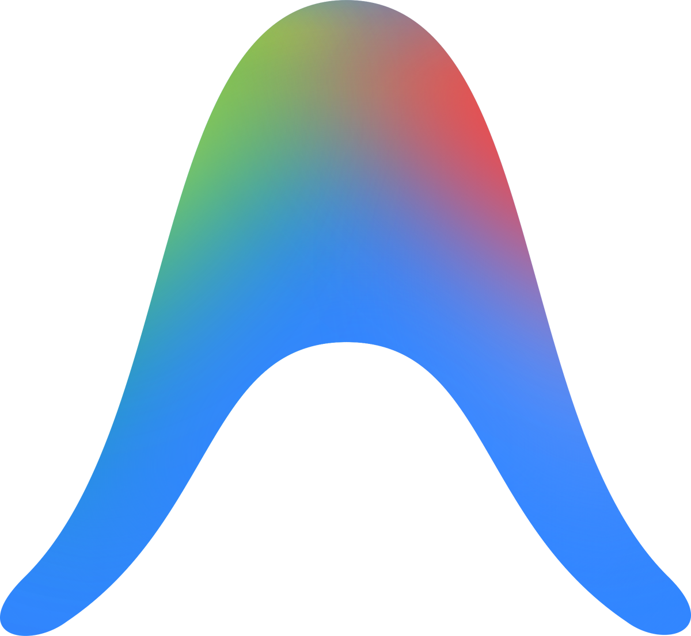
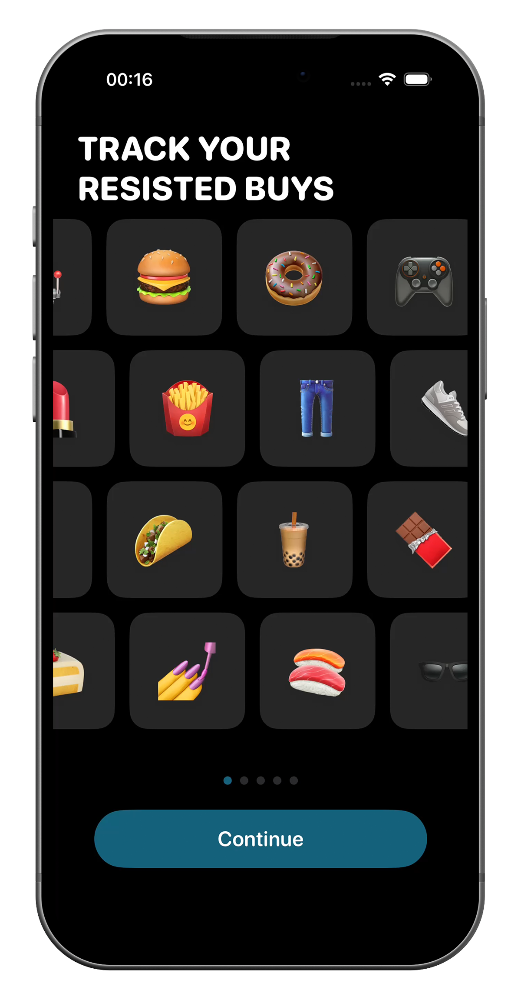
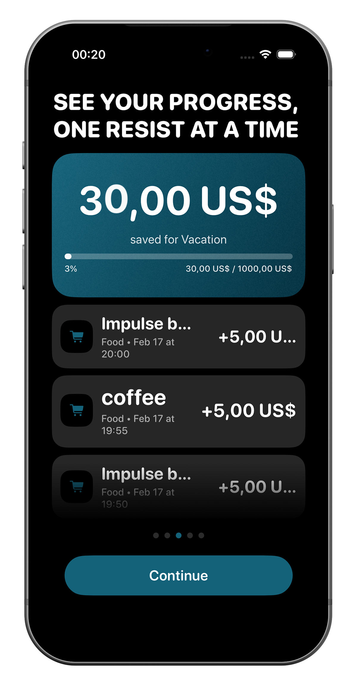
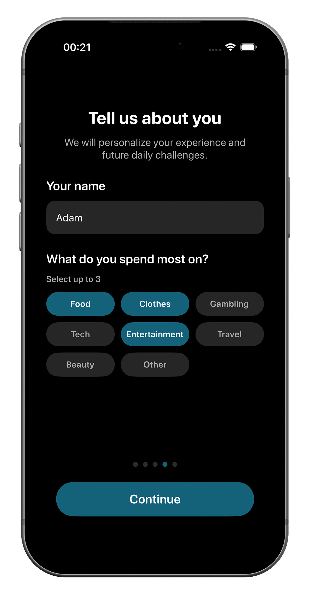

Projects
Projects
NotSpent
NotSpent is a minimalist iOS app that helps you build a healthier relationship with money by focusing on what you don’t spend. When you resist an impulsive purchase, you simply log it and the amount is added towards your goal.
I created the app as a UX/UI and development experiment to explore AI-assisted coding and experience the entire process, from the first PRD to a functional SwiftUI prototype connected to Supabase.

Behavioral reframing of money habits
NotSpent flips traditional budgeting by rewarding resisted impulses instead of tracking expenses.
Each skipped purchase becomes visible progress toward a goal.
The app focuses on reinforcing positive decisions rather than creating guilt around spending.



AI-Assisted development
Built from PRD to working SwiftUI prototype connected to Supabase.
I used AI as a coding collaborator to accelerate UI implementation, backend integration, and iteration.
The project basically served as an experiment on what I could achieve in the development phase as a non-coder.


